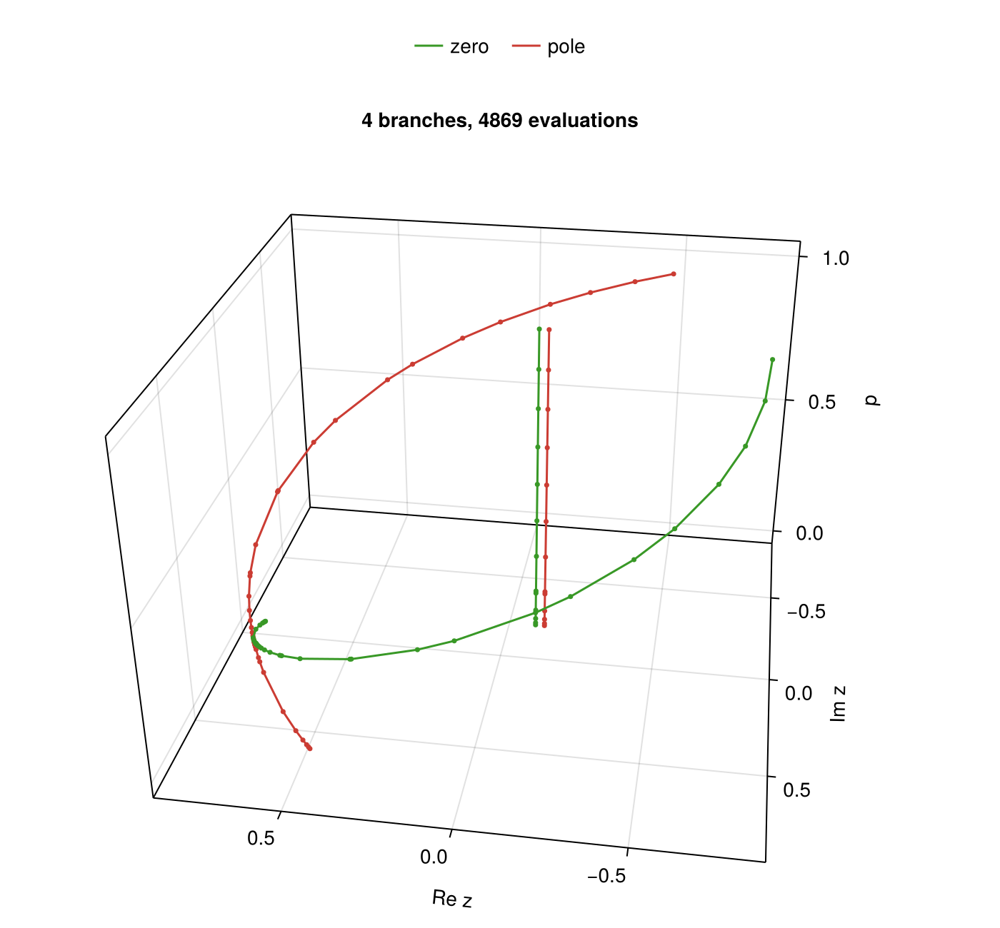

MeromorphicLoci.jl
Find the zeros and poles of a meromorphic function f(z) in a box of the complex plane, at fixed parameters or as loci z*(p) that move with parameters p.
Quickstart
using MeromorphicLoci
f(z) = (z^2 - 1) * (z - 0.5im) / (z - 2)
r = findzeropoles(f, (-3 - 1im, 3 + 1im)) # the box by opposite corners
# windings: > 0 for a zero, < 0 for a pole, |winding| = multiplicity
@assert r.points ≈ [-1, 0.5im, 1, 2] && r.windings == [1, 1, 1, -1]Over a parameter, findloci takes g(p...) returning the function of z:
# a zero and a pole that circle the origin as p varies
# plus a fixed zero–pole pair
g(p) = z -> (z - 0.80 * cispi(p)) * (z + 0.10 + 0.12im) /
((z - 0.804 * cispi(-p + 0.3)) * (z + 0.13 + 0.12im))
zbox = (-0.98 - 0.98im, 0.98 + 0.98im)
pbox = ((0.0, 1.0),) # one (lo, hi) or vector of knots per parameter
s = findloci(g, zbox, pbox)
@assert sort([b.winding for b in s]) == [-1, -1, 1, 1] # the moving pair and the fixed pair
# nothing missed or ambiguous
@assert isempty(s.deficit) && all(b -> isempty(b.uncertified), s)s holds one Branch per locus: a vector of samples x, sorted by the parameter tuple x.p, with x.z on the locus.

Interface
findzeros(f, zdomain, alg = AAA(); polish, mapper) # zeros of f(z)
findpoles(f, zdomain, alg = AAA(); polish, mapper) # poles
findzeropoles(f, zdomain, alg = AAA(); polish, mapper) # both, from one search
findloci(f, zdomain, pdomain, alg = AAA(); mapper) # loci z*(p) of f(p...)(z)The point finders return (; points, windings, converged, unresolved, nevals, …); findloci returns a Survey of Branches (?MeromorphicLoci.Survey, ?MeromorphicLoci.Branch).
Algorithms
AAA(; nsamples, tol, …)fits a rational function to samples off. The default: it costs aboutnsamplesevaluations plus a few dozen per point found, whatever the box size, whereArgumentPrinciplecosts at least2·area/minsep²; and it resolves zero–pole pairs a few times closer than its sample spacing.ArgumentPrinciple(; zres, minsep, …)refines cells near the zeros and poles by the argument principle. Use it to cross-checkAAA(Checks and cost).Continuation(seed = AAA(); …)runs the point finderseedat a few parameter values, the knots, and follows each locus between them with Muller's method.findlociwith a point finderalgis short forContinuation(alg).
AAA
The fit, its cost and what it can miss: aaa.md. benchmark/aaa.jl compares it with RationalFunctionApproximation.jl and BaryRational.jl.
Continuation
The quickstart's moving pole passes 0.004 from the zero, yet their branches stay apart: following tells loci apart down to zfloor (?Continuation), far below the sample spacing; closer approaches are listed in uncertified. A nonempty s.deficit means the count disagreed with the branches at some knot, or could not be read there.
Over several parameters, the knots form a grid: loci are found at its nodes and followed along its lines.
# the pole surface passes 0.004–0.05 from the zero surface
h(p, q) = z -> (z - 0.8 * cispi(p)) / (z - (0.804 + 0.05q) * cispi(-p + 0.3))
s2 = findloci(h, zbox, ((0.0, 1.0), (0.0, 1.0)), AAA())
@assert sort([b.winding for b in s2]) == [-1, 1] && all(b -> b.degree == 1, s2)Features confined to the inside of a grid cell go unseen; a finer grid resolves them. How it works and what is certified: continuation.md.
Argument principle
r = findzeropoles(z -> (z - 0.3) * (z + 0.4im)^2 / (z - 0.6), (-1 - 1im, 1 + 1im), ArgumentPrinciple(zres = 0.01, minsep = 0.18))
@assert r.windings == [2, 1, -1] && isempty(r.unresolved) # −0.4i, 0.3, 0.6
@assert r.deficit == 0Cells are refined down to zres wherever the phase of f winds around them, then grouped and labelled by the winding of f around each group. A zero–pole pair closer than minsep can be missed entirely: one coarse cell holds both, and their windings cancel. A minsep below their separation finds it, at higher cost:
pair(z) = (z + 0.17 + 0.18im) / (z + 0.20 + 0.18im) # 0.03 apart
@assert isempty(findzeropoles(pair, zbox, ArgumentPrinciple(zres = 0.02, minsep = 0.175)).points)
@assert findzeropoles(pair, zbox, ArgumentPrinciple(zres = 0.02, minsep = 0.025)).windings == [-1, 1]How it works: argument_principle.md. RootsAndPoles.jl solves the same problem with SA-GRPF on a Delaunay triangulation; benchmark/compare.jl tracks the loci of a dispersion relation over a wavenumber range with one findloci call and with 128 independent RootsAndPoles slices.
Checks and cost
- Completeness. Every count is of zeros minus poles, so a zero and a pole missed together escape it. Factor out what you know, e.g. search
z -> f(z) * (z - a)for the zeros beside a known polea: fewer points to find, and fewer pairs to cancel.ArgumentPrinciple:r.deficit == 0 && isempty(r.unresolved)leaves only pairs closer thanminsepunfound.AAA: no count;r.fitconvergedsays only that the fit mettol(?AAA). Cross-check withArgumentPrinciplewhere a miss matters.Continuation: counts at every knot with either point finder:isempty(s.deficit). Otherwise raisensamplesforAAA, or lowerminsepforArgumentPrinciple.
- Expensive thread-safe
f. Passmapperan order-preserving threaded map, such astmap(f, xs) = fetch.([Threads.@spawn f(x) for x in xs])or OhMyThreads.jl'stmap.findlocialso callsf(p...)through it, which must then be thread-safe too. InContinuation, finding at the knots dominates the cost, and only knots discover loci: if no locus enters the box, pass the knots[lo, hi].
Branch cuts
Neither point finder detects a branch cut as such. ArgumentPrinciple reports it as one unresolved point if its phase jump skips a quadrant (sqrt), and otherwise misses it silently (cbrt), along with any zero at its branch point. AAA fills it with a string of interleaved zeros and poles.